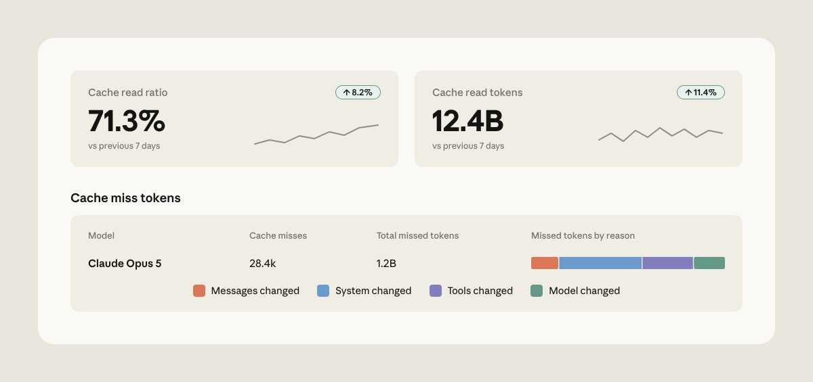
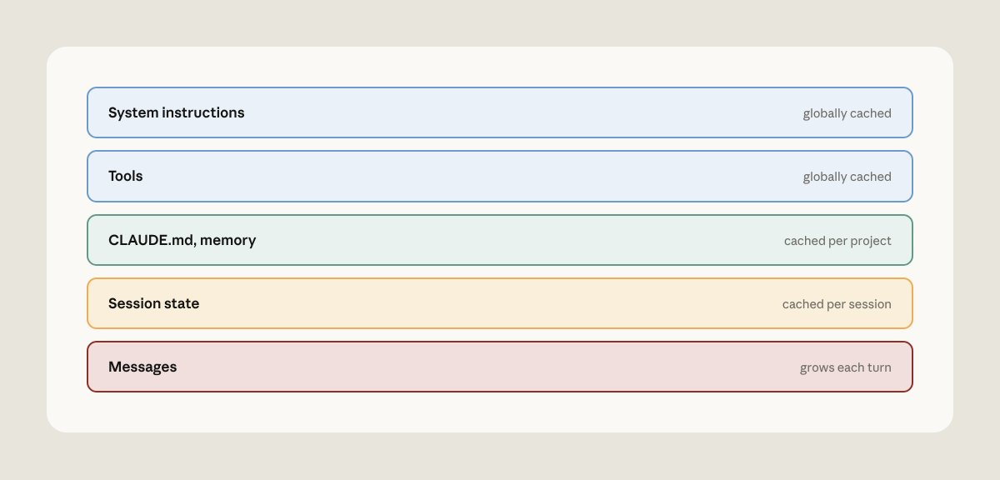
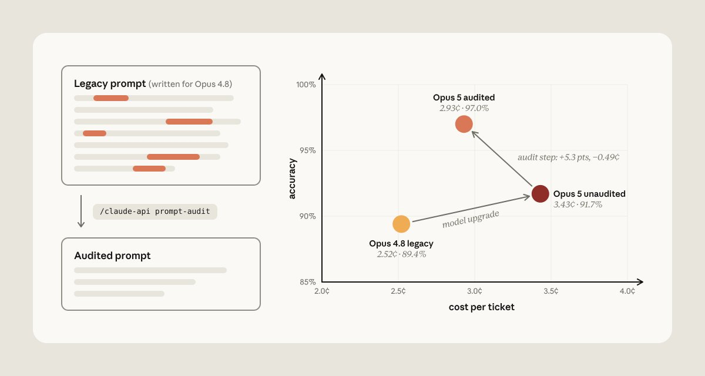
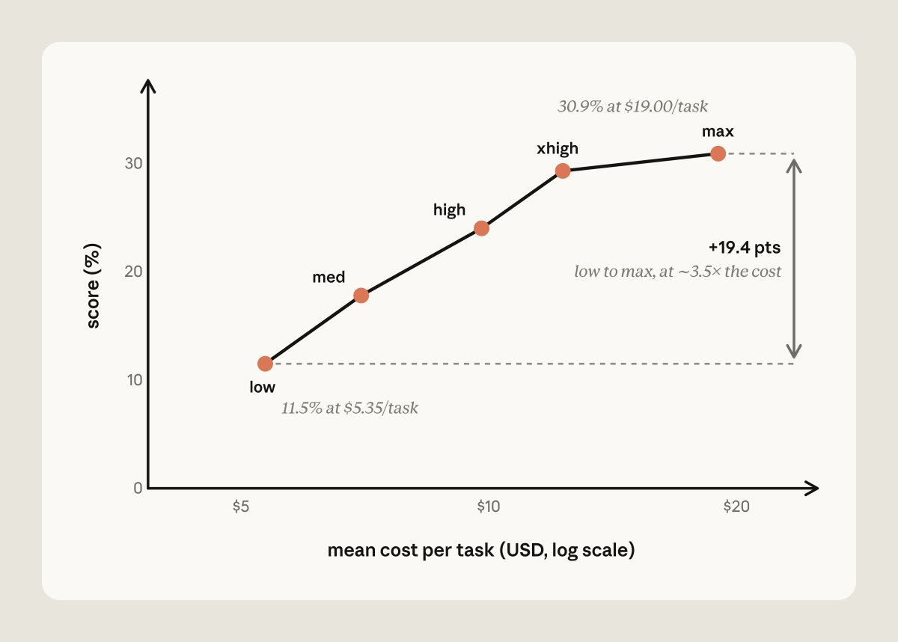
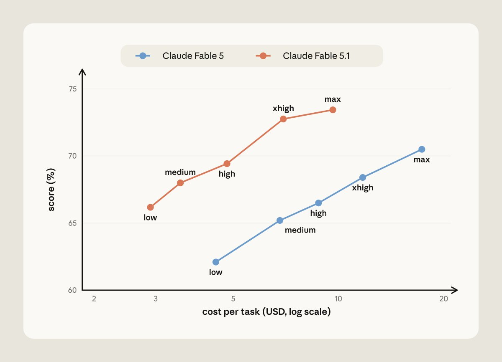
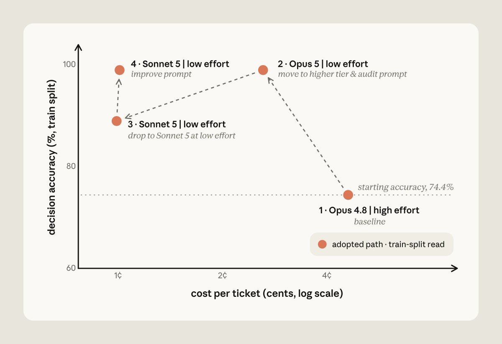
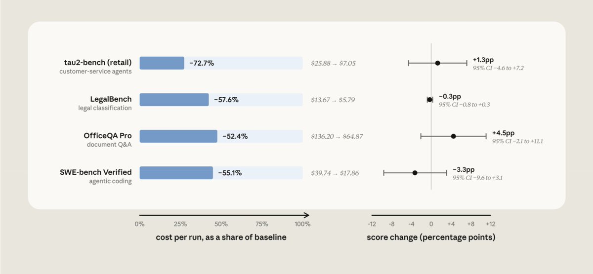

成本和性能常被看作跷跷板：想少花钱，就得接受更差的结果。Claude官方在大量Claude Platform应用上的实践是，只需三处修复就能省钱同时不掉性能：把提示词缓存命中率做到最高、在升级到前沿Claude模型时清掉提示词中的反模式、按任务校准effort。
这套经验已经沉淀进claude-api skill。下面就用Claude Code配合claude-api skill演示，它如何经常能找到既降本、又维持甚至提升性能的改法。
在Claude生成回答之前，会先把提示词处理成一份内部工作状态，这一步叫prefill，也是处理输入中最贵的一环。提示词缓存会保存这份状态（也就是KV cache）：当新请求以同一前缀开头时，Claude直接读回缓存而不是重新计算，缓存读取的计费只有完整输入价格的一个零头。
要把缓存用好，有几个事实得先记住：第一，缓存与具体模型绑定；第二，缓存读取要求前缀逐字节一致；第三，缓存有TTL（存活时间）限制。
基于这几点，官方给出几条实操建议：
不要在对话中途随意改effort。这些设置会渲染进提示词、排在正文内容之前，因此属于缓存前缀的一部分。只有部分Claude模型（包括Opus 5与Fable 5.1）支持在对话中途更新effort而不破坏缓存。
别把易变内容放进前缀。系统提示词里的动态时间戳或ID每次调用都可能变化，一变缓存就失效。
避免工具定义自我重排。使用Claude messages API时，提示词按固定顺序组装，工具定义固定渲染在顶部；工具定义有任何变动都会打掉缓存。
fork对话时要当心。子代理与分支只有在前缀逐字节一致、模型相同、effort相同的条件下，才会共享父级缓存。
官方在缓存管理上积累了一些教训：
认真监控提示词缓存命中率。Claude Console与缓存诊断API能给出未命中的原因，还能精确定位两次请求在哪里分叉（图1）。

把不常用的工具延迟加载。工具可以一次性全部声明，但把少用的标记为defer_loading：它们不进缓存前缀，只有当Claude用工具搜索查到时才被追加进对话，缓存因此得以保留。
用消息方式追加系统提示词更新。部分Claude模型支持在对话中途以消息形式追加系统指令，而不是改写system prompt，缓存得以保留。
让请求里稳定的部分待在稳定位置。静态上下文（工具定义与system prompt）放在前面，不断增长的对话放在后面（图2）。

趁缓存注定失效时再换模型或effort。compaction这类操作本来就会重写大量缓存（也就是对话），反正miss的钱都要付，这正是切换模型或effort的好时机。
对话变长后移动缓存断点。Claude Platform支持自动缓存，缓存断点会应用到最后一个可缓存块上。
预热缓存。为降低首包延迟，可以发一个max_tokens: 0、带显式缓存断点、effort与真实流量一致的请求，把提示词处理完并写进缓存但不生成任何内容。若在会话开始时（例如用户正在打字时）跑一次，第一个真实请求就能命中热缓存。
别超过缓存TTL。默认5分钟TTL从请求开始计时；如果agent阻塞在工具调用或子代理请求上超过5分钟，父级缓存会在结果返回前过期。这类场景可以为前缀设置1小时TTL。
提示词会慢慢积累起许多当年用来修补模型短板的指令，而这些指令相对最新Claude模型的能力已经过时。以下是常见会拖累前沿Claude模型、还可能悄悄抬高成本的反模式：
验证仪式。类似「double-check your work」「verify twice before responding」的指令，前沿模型会当真执行，白白浪费token。
强调彻底性与重要性的助推词。「be maximally thorough」「CRITICAL: YOU MUST ALWAYS…」这类措辞会让前沿模型输出变长、工具调用变多。
强制流程与草稿箱脚手架。固定步骤流程（例如「think step by step in a scratchpad」）或推理模板是前沿模型并不需要的仪式；这套脚手架叠在模型原生推理之上，会烧掉不必要的token。
过期的few-shot示例。为老模型失败模式调出来的示例，会教前沿模型在不需要时也去模仿一长串推理链。
互相矛盾的规则。前沿模型的指令遵循能力更强，像「always refund within policy」与「never issue refunds without escalation」这类矛盾指令会被更字面地执行，导致表现下降。
过时的配置。为旧一代Claude写的设置（例如手动thinking budget）在新模型上会被Claude Platform拒绝。
claude-api skill新增了一条命令专门盯这些反模式。在Claude Code里对你的提示词、skills或工具描述运行 /claude-api prompt-audit；审计范围覆盖工作目录里的一切，包括调用Claude API的应用代码与Claude Code自身配置（如CLAUDE.md、skills）。
官方用客服基准做过一次从Opus 4.8迁移到Opus 5的测试：从干净提示词出发，每次只植入一个反模式（过期的thinking配置、一对矛盾的退款规则、手写草稿箱、「verify twice」「be maximally thorough」、一个强制六步流程），凑成六个旧式提示词。
每个提示词分别在Opus 4.8、只改model ID的Opus 5、以及跑过一次prompt-audit的Opus 5上测试，图3是六个提示词的平均表现。

在Opus 5上，验证仪式（verify twice）会在每次退款时重复查一遍订单，烧掉多余token；强调助推（be maximally thorough）则引发几十次没必要的知识库搜索。
跑完prompt-audit后反模式被清除，平均成本下降14.6%、准确率提升5.3%。成本下降来自多余工具调用与重复推理被消除。准确率提升有三层原因：过期的thinking设置会让API直接拒绝每个路由请求；矛盾的退款规则曾让Opus 5扣住四笔本该退的款并反过来向客户确认；手写草稿箱与Opus 5的内置思考相撞，有三张工单把工具调用写进了reasoning里却从未执行。
effort告诉Claude要花多大力气思考。低effort下Claude通常更快得出结论；高effort下它会先斟酌、验证、探索备选方案，再给出回答。
同一模型在不同effort档位上的成本性能曲线并不一样。以FrontierCode Diamond（最难的50题）为例，Claude Fable 5在低effort下每个任务约5.35美元、得分11.5%；在max effort下每个任务约19美元、得分30.9%。拉满effort后得分提高约2.7倍（+19个百分点），成本约为3.5倍（图4）。
Claude Fable 5.1在Humanity's Last Exam（无工具）上呈陡峭曲线，末段收益递减：低effort每题约0.30美元、得分约53%；max effort每题约2.23美元、得分约61%。从高effort再加到max只多约半个点，成本却要增加46%，而且这点增益落在基准自身的run-to-run噪声之内，等于多付钱却没有可测量的回报。

effort调错方向有两种情况：
默认越高越好。高effort可能引发过度思考：Claude斟酌的时间超过任务所需，既增加成本与延迟，还可能降低回答质量。斟酌只在仍有证据可挖时才有价值。
一味偏低。设得太低时Claude会在证据不足时就停下：工具调用变少，它可能拿第一条搜索结果就作答而不是第三条；难题上思考变少，还会跳过它平时会自己跑的检查。答案看起来完整，实际建立在部分信息之上。
校准effort有几条实用路径：
用低effort试更强的模型。更强模型开低档，可能比弱模型开高档更便宜。以CursorBench 3.2为例，Claude Fable 5.1低effort的表现追平Fable 5高effort，成本只有三分之一（图5）。新模型更便宜来自两点：低档下每个任务做的活更少；Fable 5.1的缓存读取定价是每百万token 0.25美元，而Fable 5是1.00美元。即便按Fable 5的价格计算，Fable 5.1低effort也要便宜约40%。

摸清任务形态。跨effort档位扫一遍并测量应用性能，是理解特定任务上成本性能取舍的有效办法。在未饱和的评估集上，如果各档位的成本性能曲线很平，说明任务不受思考算力约束，加大effort没有好处。
这类校准通常要跨模型、跨effort跑评估。Claude Code里的 /claude-api hillclimb会替你完成这轮搜索：它把评估拆成训练集与测试集，提议配置改动，并阅读失败样本找出问题。
官方在客服基准上跑了一遍，起点是Opus 4.8的默认（高）effort。hillclimber先试Opus 5低effort，并用prompt-audit清掉强制工具调用仪式、草稿箱步骤与矛盾规则；训练集准确率98.9%，超过Opus 4.8基线，单票成本降到2.6美分（图6）。

接着它下探到Sonnet 5低effort，单票成本更低（1美分），但准确率掉到88.9%。阅读失败的训练工单后，Claude往提示词里补了路由规则与退款上限交叉引用，让Sonnet 5在同一成本下回到98.9%。
在搜索从未见过的14张留出工单上，最终配置得分90.5%，对照原配置的78.6%，成本约为原来的五分之一。
缓存、指令、effort是常见的降本杠杆，官方文档里还有更多。为了给调用Claude API的应用代码做一次整体成本审计，claude-api skill新增了 /claude-api cost-optimize：先分析开销花在哪里，再应用降本措施；如果提供评估集，还能展示省下的成本与性能之间如何取舍。
cost-optimize先找出token去向：有Claude Admin API key就看组织的用量与成本报表；应用有日志就看每个API响应里的usage对象；两者都没有就读请求构建代码做估算。
然后按收益排序应用方案，从提示词缓存开始，依次是精简每个请求携带的内容（含prompt-audit）、约束输出长度、把无人值守任务批量处理。如果给了评估集，它还会跨effort档位与模型选择计算成本与性能。官方以Sonnet 5为基线在四个公开基准上跑过（图7）：

LegalBench（成本降约58%）。cost-optimize建议跨任务共享前缀做缓存、开低effort、用Batch API处理任务；thinking token从102,779降到8,284，通过率保持在噪声范围内。
tau2-bench retail（成本降约73%）。通过显式放置缓存断点实现提示词缓存后，花费下降72% 且通过率持平。
OfficeQA Pro（成本降约52%）。加上批处理与文档缓存后，成本从136.20美元降到64.87美元。
SWE-bench Verified（成本降约55%）。cost-optimize发现默认配置的缓存已经正确，省下的钱来自把effort设为medium、并约束agent只输出几句简洁结论；每任务中位步数从29降到17，提示词token从75.2M降到33.7M。
迁移到前沿Claude模型后想检查现有提示词，先用 /claude-api prompt-audit。它会扫描工作目录里的提示词、skills与工具描述，可以是调用Claude API的应用代码，也可以是CLAUDE.md、skills这类Claude Code配置，然后清掉拖累前沿模型的常见反模式。
应用在使用Claude API且想做成本审计时，用 /claude-api cost-optimize。它分析token开销后逐个测试杠杆：除了prompt-audit，还会检查提示词缓存、批量无人值守任务、约束输出等省钱方式；提供评估集时还能量化effort与模型选择的取舍。
最后，/claude-api hillclimb负责成本与性能的搜索。给定评估集，Claude把它拆成训练集与测试集，再提议应用改动，目标是在维持基线性能的同时降低成本；Claude会读失败训练样本引导搜索，最终配置在留出的测试集上打分。
参考：https://x.com/ClaudeDevs/status/2097369738968195513